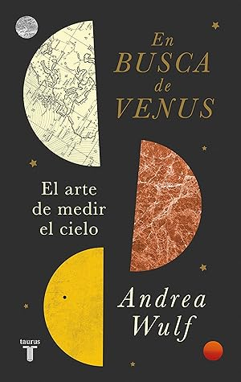

En busca de Venus. El arte de medir el cielo
Reseña por Jorge I. Zuluaga

Ver reseña en GoodReads (necesita cuenta)
Aunque trabajo como astrónomo (teórico) y he divulgado la astronomía por un par de décadas, nunca me había hecho esta pregunta. Es cierto que muchos colegas y entusiastas de la ciencia, admiro a muchos de los grandes hombres y mujeres que ayudaron a construir el gran edificio de la astronomía moderna; pero nunca había pensado en ellos como "héroes" o "heroínas", es decir como personas capaces de realizar actos muy por encima de sus capacidades o de ir más lejos y por más tiempo que ningún otro, para conseguir ampliar nuestro entendimiento del Universo.
Después de leer este increíble relato de (la inigualable) Andrea Wulf, he descubierto mis héroes astronómicos.
Conocí la obra de la Profesora Wulf a través de su reconocido Best Seller la Invención de la Naturaleza (aquí mi reseña), en la que construye una maravillosa biografía moderna de Alexander Von Humboldt y de su influencia duradera en la ciencia. En ese libro quedo en evidencia para mí la dedicación de Wulf para estudiar directamente las fuentes originales (lo que es facilitado por el hecho de que puede leer latín, inglés, francés y alemán), pero también su capacidad para convertir una aburrida relación de hechos históricos en un vibrante relato capaz de mover a un público amplio no interesado necesariamente por la historiografía.
Creo que "En busca de Venus" la profesora repite la hazaña.
El libro aborda una historia menos universal; mas dirigida a un nicho de lectores (el de los profesionales y entusiastas de la astronomía). Por la misma razón creo que no tendrá el mismo efecto de su universal Invención de la Naturaleza. Pero su estilo narrativo (es un ensayo pero se siente de verdad como una novela), además de los hechos y audacias increíbles que describe, hacen de el libro una lectura realmente entretenida (me engancho de principio a fin).
La historia se puede resumir así: en la era anterior a los viajes espaciales y los radares, para saber el verdadero tamaño del Sistema Solar (la distancia en kilómetros entre el Sol y los planetas), la naturaleza solo nos daba dos oportunidades consecutivas cada aproximadamente 2 siglos. Una de esas oportunidades ocurrió casualmente durante la ilustración y el colonialismo europeo, en los años 1761 y 1769. En el verano boreal de ambos años pudieron presenciarse sendos "tránsitos" de Venus sobre el disco solar (o lo que podríamos llamar también eclipses de Venus). La observación simultánea de estos tránsitos y en particular la medida precisa del tiempo en el que los tránsitos "comenzaban" y "terminaban" nos permitió, por primera vez en 4000 años de historia de astronomía determinar con precisión la distancia de la Tierra al Sol. Pero para lograr esta hazaña fue necesario que decenas de atrevidos astrónomos viajaran a lugares remotos del planeta (solo puede lograrse una medida relevante si se registran los tiempos en lugares a distancias de decenas de miles de kilómetros). Este libro es sobre la historia de la preparación y realización, en medio de las más increíbles aventuras e infortunios que se pueda uno imaginar, de estas observaciones.
Jamás creí que lo que hoy enseñamos en las aulas como un dato fácil de mencionar, hay en promedio 150 millones de kilómetros entre la Tierra y el Sol (hoy llamamos a esa medida la unidad astronómica) y la distancia de todos los planetas se mide en función de esa unidad, tuviera una historia humana tan increíble como la que revela la Profesora Wulf en este libro.
¿Y quiénes son entonces mis héroes astronómicos? No se los puedo decir; arruinaría la historia y es mejor que ustedes la descubran personalmente. De una cosa si estoy seguro: vamos a estar de acuerdo en quienes fueron esos personajes que lo sacrificaron casi todo para que los astrónomos del futuro conocieran la medida del cielo.